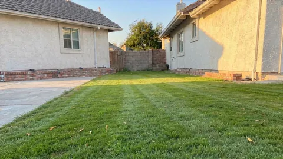
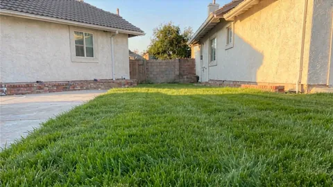
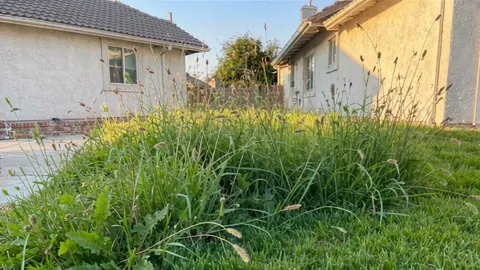
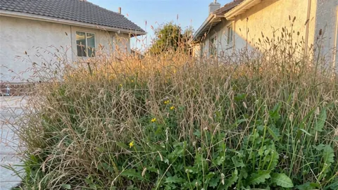
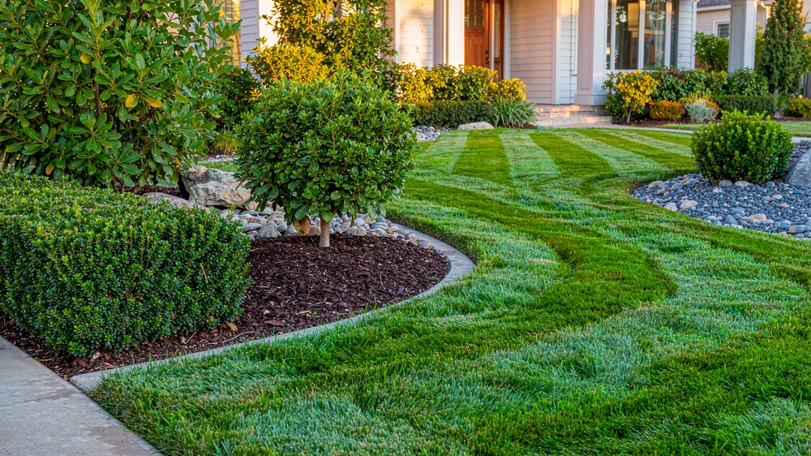
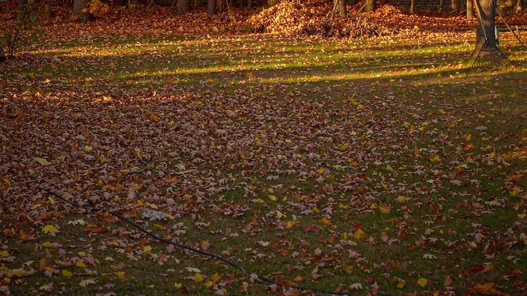
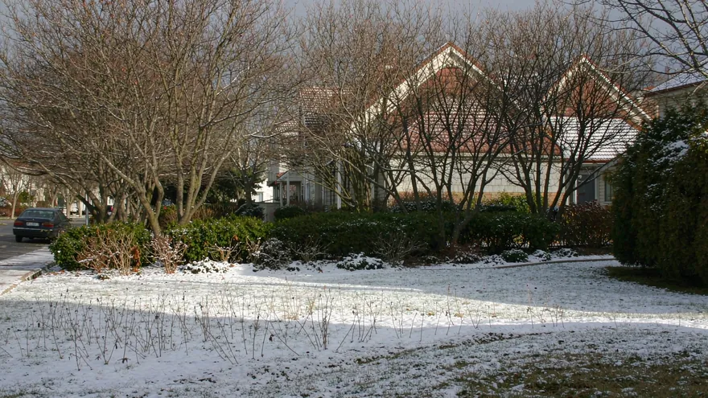

Wondering about the cost of mowing grass? Estimate mowing by size, condition, terrain and state rate — then add weed control, dethatching, aeration, fertilization, mulch, seeding, leaf removal or yard cleanup. Compare DIY vs hiring and generate a printable quote.
2026 planning estimates. Mowing is priced per visit (US base ≈ $0.0115/sq ft from LawnStarter 2026 ranges; Canada ≈ CA$0.011/sq ft from Mow.ca 2026) × grass condition × terrain × obstacles × your state/province cost index, minus your plan discount. State/province indices use the MERIC/C2ER Cost of Living Index (2026); season lengths are anchored to USDA hardiness zones. See the Methodology for every source. Estimates only — not a binding quote.

Short−10%
Normalbase rate
Tall+45%
Overgrown+90%Total length of edges to trim — along the driveway, fence, sidewalk and garden beds. Leave it blank and we estimate it from your lawn size (≈ 4 × √area). Enter a real measurement for a sharper quote.
This is not a fixed answer — it's a model you can drive. Your lawn inputs stay in sync with the calculator above, then you add your mower, your speed and your hourly value. Change the mower and watch both the time and the money move.
Synced with the calculator above — edit either one.
Deck width and speed come from the mower, but you can override them with real spec numbers.
| Where the time goes | Minutes | Why |
|---|
| Horizon | Mows | DIY cash | + your time | Hire | Cheaper |
|---|
How to read it: "DIY cash" is fuel/energy plus upkeep for that period. Short horizons and Year 2 assume you already own the mower, so they show the true marginal cost — add the mower price if you are starting from zero. Year 1 shows the real cash outlay including the machine; the 5-year row replaces it as it wears out, so Year 1 + 4 × Year 2 ≈ 5 years. "+ your time" values your hours at the rate you set. Hire prices come from the same pricing model as the calculator above, so the two can never disagree.
Same lawn, same operator, different deck. Times assume the speed and efficiency typical for each class.
As an Amazon Associate we earn from qualifying purchases. Mower prices are typical 2026 US retail bands; Amazon links are placeholders you replace with your own tracking ID.
US national averages for 2026, before state multipliers. Mowing is per visit; add-ons are per application or per season.
| Lawn size | Per visit — weekly plan → one-time | Weekly plan, per month | Notes |
|---|---|---|---|
| Small (~2,000 sq ft) | $30–$35 | $119 | Minimum charge dominates at this size |
| Medium (~5,000 sq ft) | $49–$58 | $196 | Most suburban homes |
| Large (~10,000 sq ft) | $77–$90 | $307 | Price per sq ft falls with volume |
| 1 Acre (43,560 sq ft) | $200–$235 | $798 | Wide-deck walk-behind or rider |
| 2+ Acres | $313–$368 | $1,253+ | Wide-deck or zero-turn territory |
In the "per visit" column the lower figure is the weekly-plan price (15% off) and the higher figure is one-time — both at national index 1.00. This is a plan-vs-one-time range, not a geographic one: the same lawn also moves ±% by state (see below), which is separate again. Your state/province index, grass condition, slope and obstacles all multiply these numbers — that is exactly what the calculator above does.

| Service | Per application | Applications / season | Season total |
|---|---|---|---|
| Weed control | ≈$110 | 4 | ≈$440 |
| Dethatching | ≈$115 | 1 | ≈$115 |
| Aeration | ≈$155 | 1 | ≈$155 |
| Fertilization | ≈$90 | 5 | ≈$450 |
| Mulch cleanup & refresh | from $150 | 1 | ≈$150 |
| Seeding / overseeding | ≈$500 | 1 | ≈$500 |
| Leaf removal | ≈$150 | 2 | ≈$300 |
| Yard cleanup | from $200 | 2 | ≈$400 |
These are the calculator's own outputs at national index 1.00 on a 5,000 sq ft lawn — not a separate price list, so the table and the calculator can never disagree. Scale by your state index, slope and obstacle multipliers. Every figure sits inside the published 2026 ranges (LawnStarter: weed $50–210, dethatching $65–165, aeration $107–202, fertilizer $67–405, seeding $427–1,514, leaf removal $107–435, yard cleanup $216–462).
The calculator covers all 50 US states + DC and 13 Canadian provinces/territories. Every state carries a rate index vs the national average and its typical mowing season length — both shown in the state dropdown and used in the annual estimate.

Autumn
WinterSeason length is a multiplier, not a detail. The two photos above are the same kind of lawn in the same kind of neighbourhood, months apart. Two lawns at the same per-visit rate cost wildly different amounts per year: a 12-month Florida season means 48 weekly cuts, while a 5-month Minnesota season means 20. That gap — not the hourly rate — is what makes northern quotes look cheap on paper and short in reality.
19 answers in two parts — what things cost, and how far you should trust this calculator. Every figure below comes from the same pricing model the calculator above runs on, so the FAQ and your estimate cannot disagree.
If you'd rather mow it yourself, these are editor-tested picks matched to common lawn sizes. As an Amazon Associate we earn from qualifying purchases.
Homeowners: compare bids or keep a summary. Pros: produce a clean, printable estimate to send customers. No account — everything runs in your browser. Print or "Save as PDF" from the print dialog.
Tip: fill the calculator at the top first, then click "Use my calculator inputs".
Prefer to have someone else do it? Enter your ZIP and compare real quotes from leading provider marketplaces. Free to check — no account, no sign-up.
We may earn a commission if you hire through a partner — at no extra cost to you. Each link opens the provider's own site; we never receive your contact details.
Three guides that answer what the calculator cannot: how often the lawn actually needs cutting, whether doing it yourself is worth it, and how a fair quote is built from the other side of the fence.